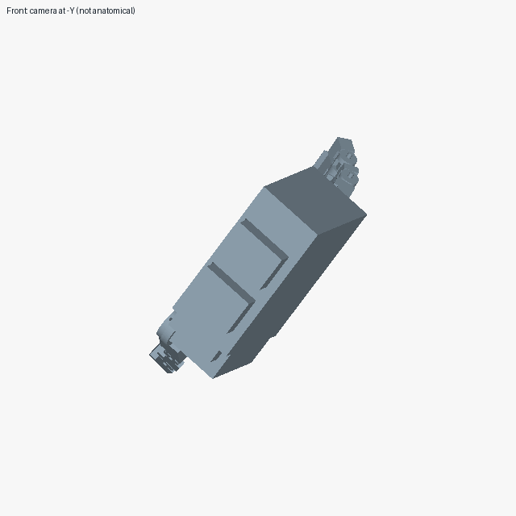
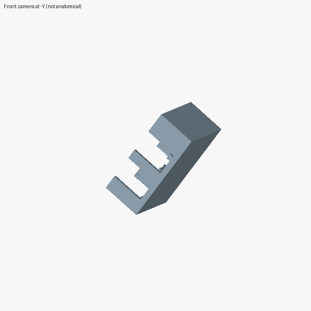

Sunnyday Technologies · October 4, 2026 · Development results, unranked
HandBench update: execution works, reconstruction remains incomplete
Local Qwen completed the Halden test workflow, including image feedback and grading. It did not reconstruct the hand: only the fixed anchor was saved, for 0 of 48 scored groups.
This follows our initial Amazing Hand study. The immediate goal was to establish a local workflow that could save an assembly, return inspection images to the model, preserve the submission and grade it. That cycle now works under one tested configuration. Assembly quality remains the problem.
The Halden case
Halden is our own AI-authored hand concept, developed for this testing program. The September 24 snapshot contains 49 rigid groups comprising 90 solids. Ten flexible groups are excluded. One rigid group is the supplied alignment anchor and receives no credit; the other 48 are scored against the retained reference at a 1 mm placement tolerance.
The participant receives component geometry and eight reference views, not the completed assembly or its placement data. This digital reconstruction task does not establish grasping performance, strength or physical buildability.




What the local run completed
The working attempt used qwen3-vl:32b with Ollama 0.32.1. It finished in 4.47 minutes, with 12 model requests and 11 CAD or inspection requests. Four were inspection requests; two checkpoint images were returned and included in later model requests.
The model explicitly finished. The saved assembly was frozen, graded and retained, and the run's resources were cleaned up. Image-delivery records confirm that reference views and the requested checkpoints reached the model as image data. They do not establish that the model understood those views.
The adapter required one structured action per response and supplied inventory-only progress feedback. It requested thinking off and used an explicit closed-thinking prefix; no effort label was available. Sampling used temperature 0.6 and seed 4101. Each attempt was capped at 30 minutes, 50 model turns and 50 CAD or inspection requests, including at most 12 inspections. No paid model calls or model downloads were used in this local campaign.
The failures remain part of the record
Six local attempts were retained across preparation and repair. The interface changed between them, so they must not be treated as six equivalent model trials.
| Attempt condition | Model requests | Outcome | Matched / scored |
|---|---|---|---|
| Original interface | 1 | Response truncated; no saved assembly | Not graded |
| Startup revision | 0 | Startup failed before model execution | Not graded |
| Grammar revision | 1 | Runtime rejected the response grammar | Not graded |
| Single-action revision | 50 | Turn limit; anchor-only assembly | 0 / 48 |
| Inventory-feedback revision | 12 | Workflow completed; anchor-only assembly | 0 / 48 |
| Native-conversation test | 1 | No valid action in the response content | Not graded |
The four-attempt repair campaign consumed 64 model requests and 61 CAD or inspection requests; the first two attempts are retained separately. An internal evidence review checked image delivery, saved-file hashes, grading and cleanup. No failed attempt was replaced.
A separate DexHand development result
Astra Medium (gpt-6-astra) completed a development run on a partial, 101-instance DexHand snapshot. It returned all 101 instances in 14.96 minutes, using 16 CAD calls with no failed CAD calls. With the anchor excluded, 16 of 100 instances matched the reference under that case's 5 mm distance screen.
The record also retains an earlier failed hand attempt, graded 0/100, and a separate runtime qualification. The completed return initially exceeded the grader's time allowance. A metric-preserving evaluator change then graded the same frozen geometry; the assembly was not repaired or rerun for that grade.
This was an assisted, adaptive test. The partial source snapshot does not fully determine a unique hand pose, so the measurement describes agreement with one reference, not mechanical correctness. Its case, tolerance and assistance differ from Halden. The two scores cannot rank Astra against Qwen. No DexHand CAD or imagery is redistributed with this update.
What comes next
Freeze the Halden task and adapter, then run repeated local trials with the same budget and scoring. Report every attempt, including setup failures and incomplete returns. That will provide a basis for measuring improvement without confusing software repairs with model capability.
For now, the result is narrower: one local configuration completes the test workflow; a successful hand reconstruction has not been demonstrated. Nightly scheduling and cross-host qualification remain outstanding. The hand results page keeps these development observations separate from ranked entries.